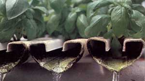
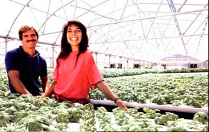
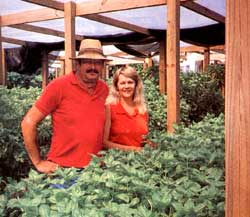

A Hint Of Mint
November/December 1989
This hydroponic business is growing almost as fast as its crops.
by Pat Stone
The factory tour. Come tour a remarkable plant plant, where 18 workers produce 36,000 herbs a week, then package, refrigerate, and deliver them to grocery store chains over much of the East Coast.
The herbs. Each flavorful, six-inch plant reclines in an attractive, hard-plastic case: a half ounce of basil, mint, or other herb-roots intact.
Past, process, or product. Whichever you start with, your setting will be New York's affluent Westchester County. Here, 30 minutes from midtown Manhattan, lies a country lane shaded by maples instead of high-rises. At its end is Will O. Wood estates: a gorgeous mansion, woods, and lake, and tucked around its side, our subject, Goodness Gardens.
The past. 1981. Twenty-year-old Brian Murphy is landscaping part-time at Will O Wood and studying computers in night school. Edward (Eddie) Rosenthal, estate owner and financial investor, asks Murphy if he'd like to build and run two hydroponic greenhouses for a research project.
Over three years, Brian learns (the hard way) greenhouse construction and hydroponic crop management. The project becomes a small business-the sale of tomatoes and cucumbers. One day, college student Loretta Ciotoli pedals by for a visit and, entranced, ends up taking a job.
From there, events accelerate. Hydroponic lettuce replaces tomatoes and cucumbers. Ciotoli marries Murphy (her bridal bouquet: two heads of hydroponic lettuce). Ciotoli-Murphy tells Rosenthal that she can do a better job of selling their produce than their current marketer. Eddie gives her the chance, and she does: Sales shoot up. By 1986, 30,000 square feet of greenhouses yield $200,000 in sales. In 1987, it's 43,000 feet and $400,000.
But Loretta foresees trouble. "All of a sudden, Weyerheuser, Campbell, everyone was getting into hydroponic lettuce. The price was going to drop off. Brian and I were sitting in our kitchen asking ourselves, 'What other green, leafy items with quick turnover can we grow?' I looked up at an old poster of culinary herbs we had on the wall and said, 'Why not grow herbs?' " With a little help from Zita Rosenthal (Eddie's wife), they did just that.
The process: hydroponics. Soil-less growing is perhaps the quickest way to produce crops. Brian Murphy: "Our crops mature 20 to 25% faster than those grown in soil. Their roots get food immediately from the nutrient solution. They stay small, so the plants put all their energy into their tops. The crops are never under water stress. And we can feed them exactly what they need to grow. As a result, it takes us only four to six weeks to raise an herb crop."
Hydroponics is also space and resource efficient. The Murphys claim it would take 60 acres of outdoor growing area (in chilly New York State) to produce the same annual output their one acre of greenhouses does. They add that they use only 500 gallons of water a day, while outdoor crops can demand several thousand gallons.
The rub? Vigilance. Both Murphys work 80 hours a week. Brian: "The crops have to be watched all the time. If a pump shuts off on a summer day without our noticing it, we could lose $20,000 worth of crops in an hour." He tests everything by hand twice a day, refusing to go to a fully automated system.
Each plant grows in a small foam cube that sits in a U-shaped trough. (Brian designed these canals himself. They're thin, so he can squeeze in more rows, and they have wide overhanging lips to reduce evaporation.) One minute out of every 10, a recycled nutrient solution is flushed through the canals. (The roots absorb oxygen the other nine minutes.) After two weeks, that batch of solution is discarded, and for one day the crops are given plain water. This cleansing "fast" helps prevent disease and encourages the plants to concentrate essential oils.
Brian doesn't use any chemical pesticides and uses botanical ones only as a last resort. Goodness Gardens' crops thus fit current standards for "pesticide-free" produce. However, since they're raised with chemical fertilizers, they can not be certified as "organic. " Murphy argues that his crops are just as wholesome and nutritious. "Plants don't use organic matter; they use inorganic nutrients. We just skip the breakdown process and directly feed them the 16 nutrients they need. Look at it this way: A lot of 'organic-diet' people take chemical vitamins regularly. We're just popping daily vitamins to our plants."
The product: Timeless Thyme and friends. Brian's greenhouse systems are so efficient that it takes only two employees to manage all 11 units. The real labor comes in packaging: Fifteen workers man the assembly line. There, each individual plant is cleaned, boxed, labeled (with such names as Magical Marjoram, A Hint of Mint, and Oh-Oh! Oregano!), and then refrigerated. The result?
Three thousand cases of Goodness Gardens herbs are shipped each week. That's an amazing 36,000 half-ounce packages of living herbs, each one retailing in grocery stores for anywhere from 99 cents to $1.49.
Loretta's specialty is finding customers for those cases, and she's done it by offering quality service. "We ship all our herbs in our own refrigerated trucks, so we're sure they're handled correctly. We use hard-plastic packs that protect the plants and keep their roots intact, so they'll stay fresh for two weeks instead of two days. And our labels have recipes and serving suggestions to help people understand how to use fresh herbs."
Consistency is another Goodness Gardens trademark. "We guarantee A & P, Pathmark, Grand Union, Shop Rite, and our other chains a year-round supply of the product and-unique in the produce industry-a year-round price. We don't sell basil for $4 in the summer and $20 in the winter."
As a result, business is booming: Sales have almost doubled every year since the switch to herbs. The Murphys now have more than $1.5 million in annual sales ($350,000 profit) and have become one of the largest hydroponic herb growers in the country.
The future: staying ahead. Now they've reached another turning point. Because of local zoning restrictions, Goodness Gardens cannot expand any more at its Westchester site. So the firm has started raising additional crops outdoors in southern Florida.
Loretta's also looking further down the road. Basil (40% of sales), mint (15% chives, oregano, and the other herbs are all selling well now, and Ciotoli-Murphy has her eye on several other East Coast cities she wants to move into. Still, she sees the day when there'll be a glut of hydroponic herbs on the market. Thus, she's once again looking into other options (such as distributing other growers' products) and crops (baby vegetables). The couple also promotes the Wonder Grow garden, a 2' X 2' homeowner's version of their hydroponic system ($229 from Wonder Grow Corp., Journey's End Rd., Croton-on-Hudson, NY 10520).
Combine the Murphys' industriousness, growing skills, aggressive marketing, and insistence on quality, and it becomes clear that although this story could have three beginnings, it will probably have only one ending.
Success.
HOME-SCALE BUSINESS
On Florida's west coast Pete and Pat Barker manage an eight-acre herb greenhouse in their own back yard- an operation geared toward conserving labor and resources.
NOT EVERY HYDROPONIC HERBbusiness is a big one. In the Tampa, Florida, suburb of Brandon, Pat and Pete Barker manage a prospering eighth-acre herb greenhouse-right in their backyard.
The Barkers, like the Murphys, raised vegetables before switching over to herbs, but their production and marketing methods are on a much simpler, smaller scale. For instance, Pete starts his basil by sprinkling the seed from a saltshaker onto graveled rain-gutter beds. (Brian Murphy uses a mechanical seeder to precisely implant his foam cubes.) Instead of raising the crops in a completely enclosed environment, the Barkers grow theirs under an air-inflated plastic roof. During most of the warm Florida year, the sidewalls are kept rolled up.
Rather than deliver carefully packaged five plants in refrigerated trucks, Pat and Pete sbag cuttings (one basil planting may thus produce for as long as a year) and deliver them to wholesalers in a covered pickup. From there, most of their produce goes to restaurants, including many at Epcot Center, Disney World, and the Caribbean islands.
Of course, the Barkers' income is more "home-scale" as well. They gross $900 to $1,200 a week-instead of the $29,000 (and growing) in sales the New York business generates. But Pat and Pete aren't complaining. They're working together at something they like and that helps conserve resources. (Their operation uses less than 100 gallons of water a day-less than some families consume on showers.) Indeed, since they keep coming up with ways to make their jobs less labor-intensive, they've now reduced their workweek to just 40 hours-between them!
- Monica Brandies
 The secret's in the sauce... and in the carefully designed troughs that maximize area and minimize wasteful evaporation. The plants are fed once every 10 minutes |
 Brian and Loretta Murphy, surrounded by the herbs crops of Goodness Gardens. The soil-less hydroponic process is pesticide-free highly efficient, and able to yield 36,000 plants a week |
 On Florida's west coast Pete and Pat Barker manage an eight-acre herb greenhouse in their own back yard? an operation geared toward conserving labor and resources. |
|
 |
|
|